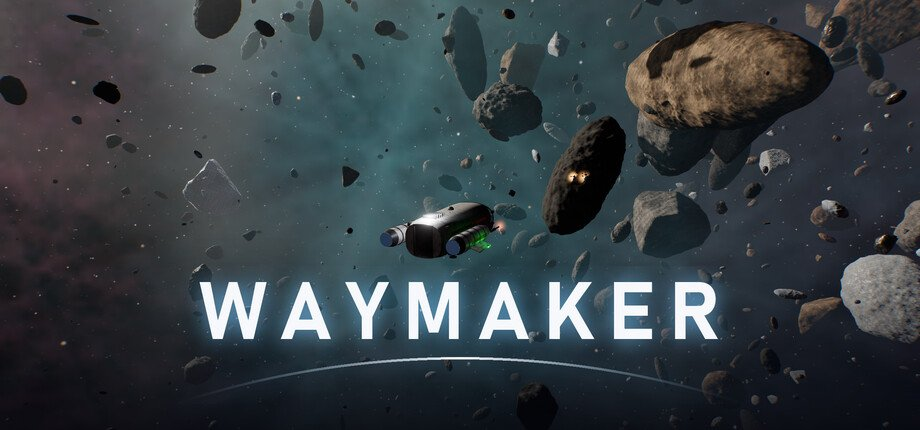
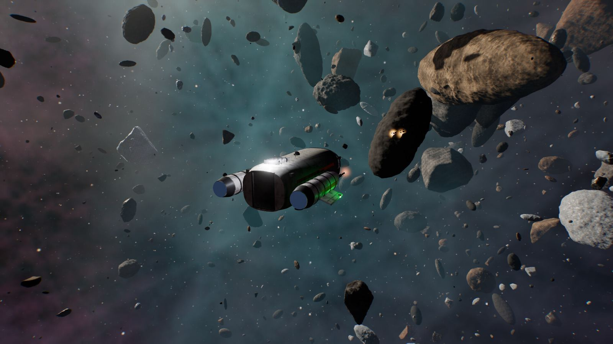
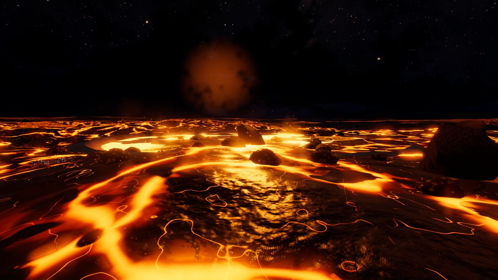
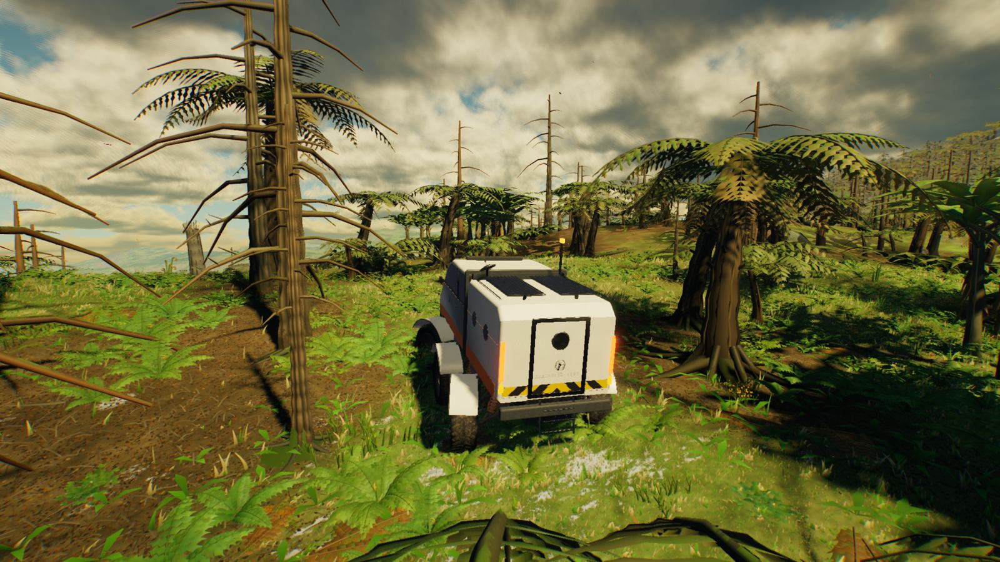

Waymaker
Fly a second-hand ship past the edge of the charted stars. Dive from orbit through the clouds of a world nobody has named, land anywhere and step out of the airlock. Chart its rivers, caves and species, name it, claim it… or go too far to ever come back.
Trailer Waymaker
Past the last jump route, the map is blank.
Humanity has only been settling space for a generation. The Company pays independent scouts to go in first: survey the systems, stake the claims, name whatever they find. The convoys will follow your charts. You fly a second-hand ship, with your onboard AI and your debts for crew.
Waymaker is in development, on its own engine. Everything shown here is playable today; the list below separates what already exists from what is still to come.
Screenshots






Playable today (pre-alpha)
- Cockpit flight: six axes, inertia, flight assist, mouse or gamepad.
- Procedurally generated star systems, linked by jump routes.
- A seamless descent from space to the ground, on real-scale planets with a curved horizon.
- Five world types: desert, primordial (with islands), ice, lava, ocean.
- Terrain, rivers, lakes and caves; weather and seasons.
- Plants and creatures placed by climate, altitude and water.
- On foot: aboard your ship, even in flight, on asteroids and on planets; diving on ocean worlds.
- The rover and the bike, a wreck to explore, generated ships you can walk around.
- The scanner, the binoculars, the field journal, mining, crafting and upgrades.
- Contracts, races, and combat against ships and turrets.
- Online co-op.
Planned
- The story: sixteen missions, and old beacons no registry knows about.
- The full field journal and Steam achievements.
- New worlds, toxic or crystal, and new species.
- A fleet and capital-ship battles.
- And, at the journey’s end, a place to settle down.
At a glance